TUTORIAL PARA FORNECEDOR AEROMÉDICA
Como acessar a solicitação via web e via aplicativo
Via web:
1 - Acesse o sistema, pelo link recebido no e-mail

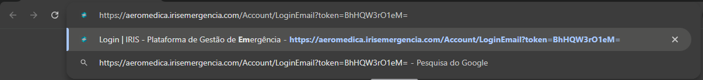
. Digite o endereço completo no navegador
. Pressione Enter
. Verifique se a página carregou corretamente
2 - Faça login com seu email que recebe o link
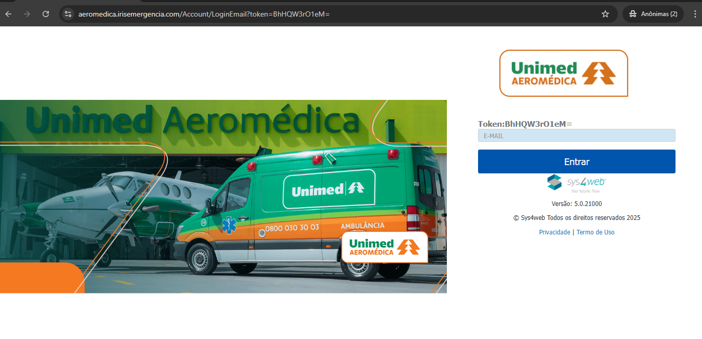
. Insira seu e-mail
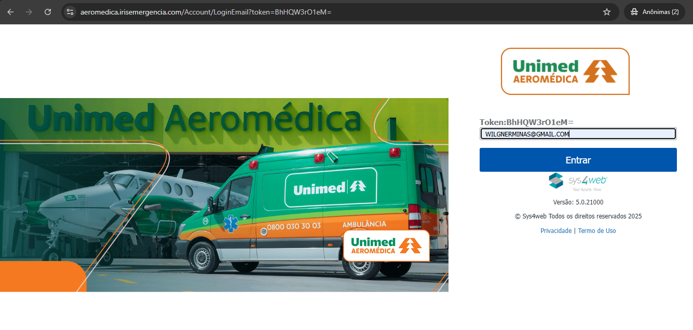
. Clique em "Entrar"
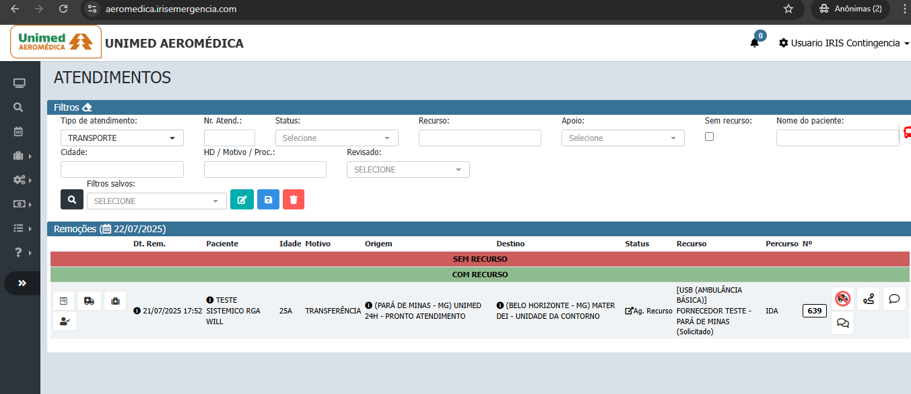
. A tela será aberta
3 - Acesse atendimentos e clique na ambulância para acompanhamento
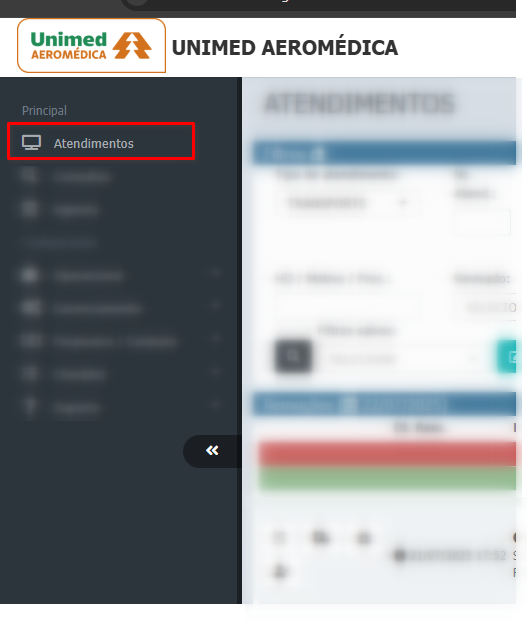
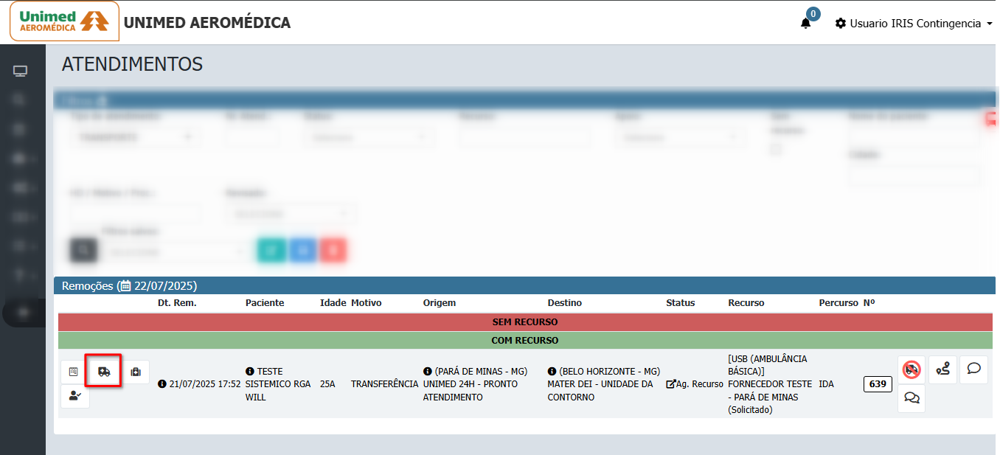
. Clique no menu lateral
. Selecione "Atendimentos"
. A lista de atendimentos será exibida
. clique na ambulância
4 - Irá abrir o acompanhamento de toda a remoção
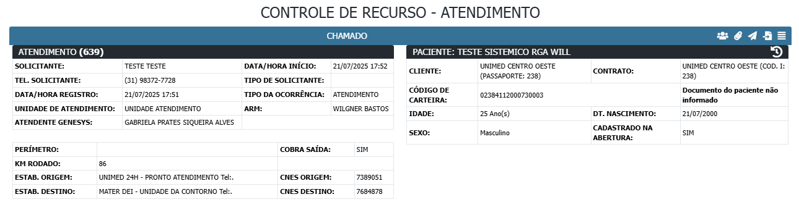
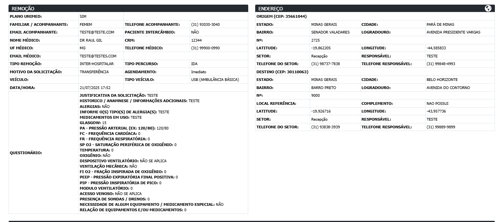
. Atendimento
. Paciente
. Dados vitais do paciente
. Origem e Destino
. Prestador de ambulância
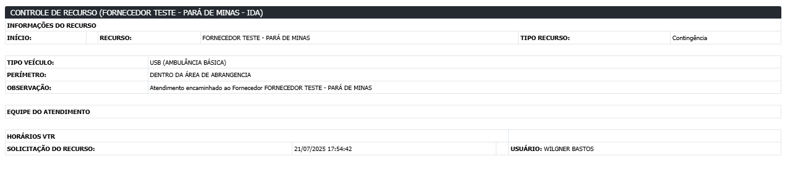
5 - Campos de preenchimento do prestador de ambulância
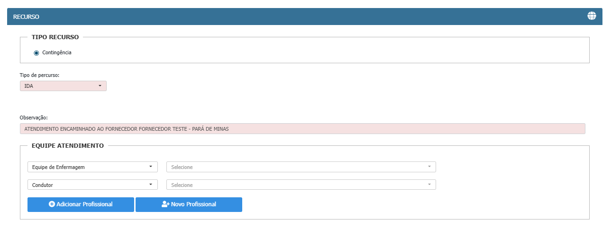
. Tipo de percurso e Observação são preenchidos pelos solicitantes
. Preencha os campos da equipe de atendimento (Caso não tenha, deixar em branco)
Caso não exista um profissional cadastrado siga estes passoas abaixo
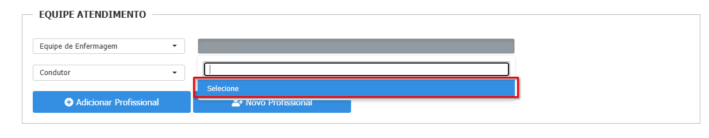
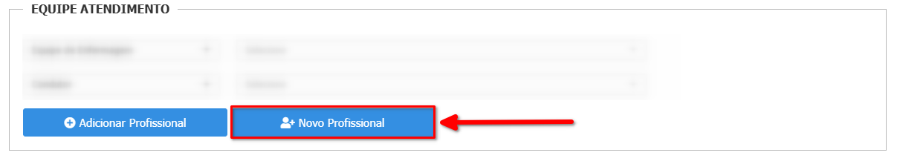
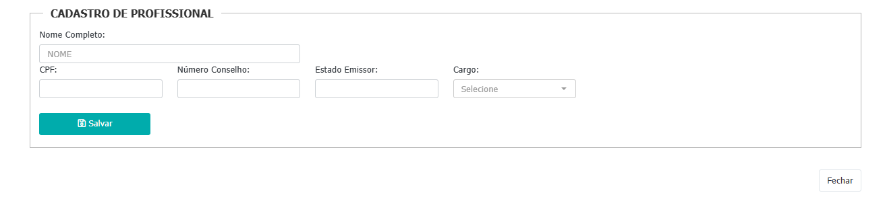
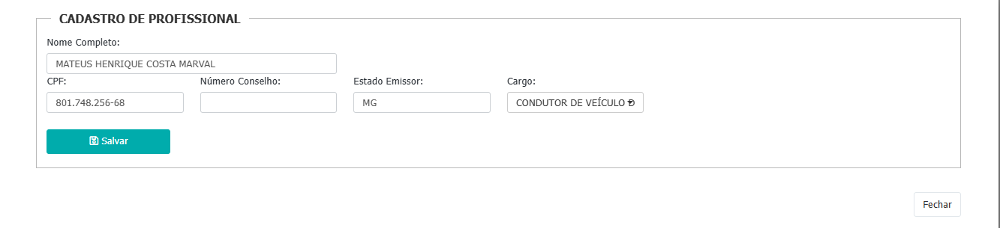
. Atualize a pagine e o profissional irá aparecer
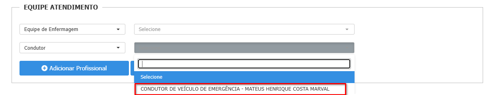
6 - Preenchimento das Saídas
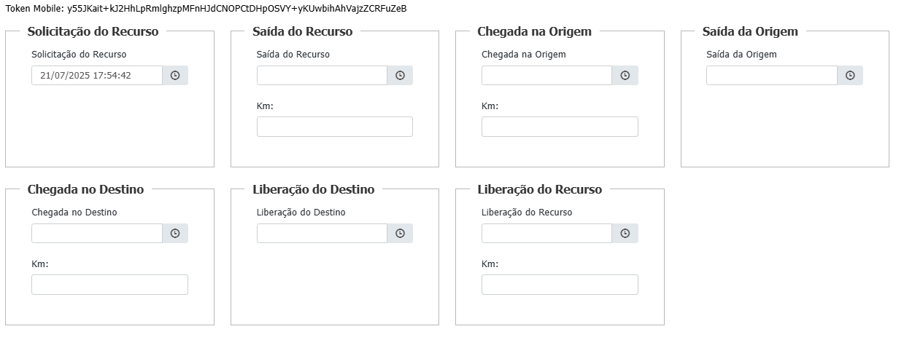
. Preencha o percurso, horario de sáida de cada posto
. Preencha os campos da equipe de atendimento (Caso não tenha, deixar em branco)
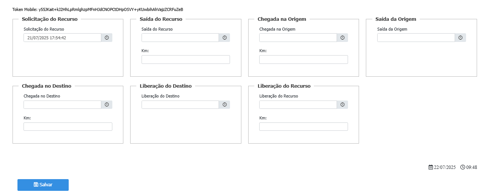
Após preencher todo o percurso, Clique em "Salvar"
7 - Preenchimento de CENA
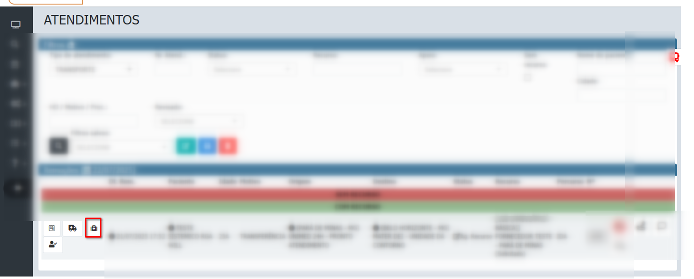
. clique na maleta
. clique em "atendimento sem cena"
. Coloque uma observação
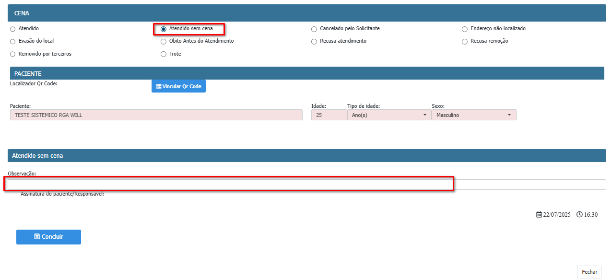
Após preenchimento da cena, e observação clique em Concluir
7.1 - Caso tenha Cena
. clique na maleta
. clique em "atendimento sem cena"
. Coloque uma observação
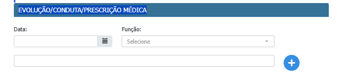
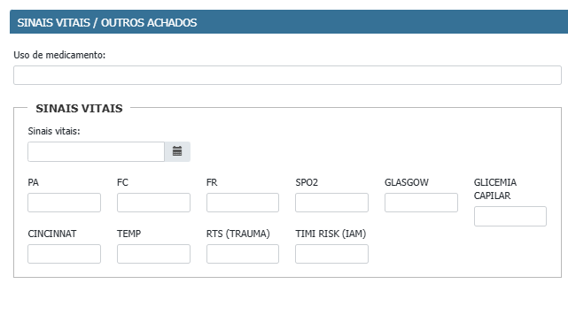
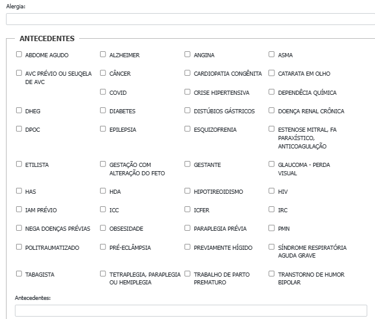
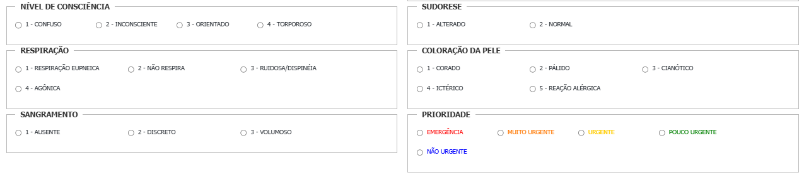
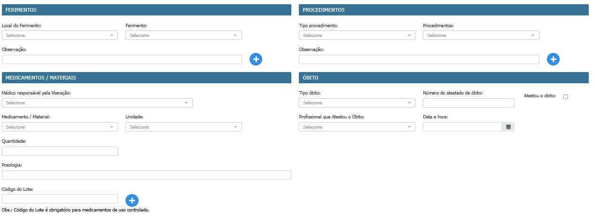
 Após preenchimento do Formulário da cena, e observação clique em Concluir
Após preenchimento do Formulário da cena, e observação clique em Concluir
Como acessar e preencher via Aplicativo:
1 - Abra o aplicativo no seu celular

. Toque no ícone do app
. Aguarde o carregamento
. Verifique se há conexão com a internet
2 - Insira o TOKEN

. Coloque o Token recebido no e-mail ou fornecido pelo atendimento
3 - Acesse as solicitações

. Vá até o menu
. Toque em "Solicitações"
. A lista será exibida
4 - Escolha a solicitação

. Toque na solicitação desejada
. Leia os detalhes com atenção
. Clique para responder
5 - Preencha e envie a resposta

. Preencha os campos obrigatórios
. Anexe arquivos se necessário
. Toque em "Enviar"